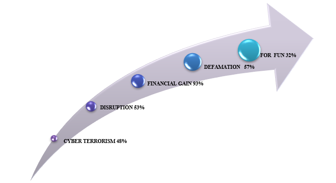
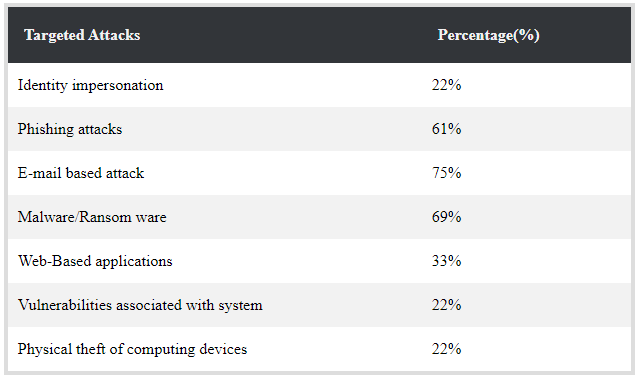
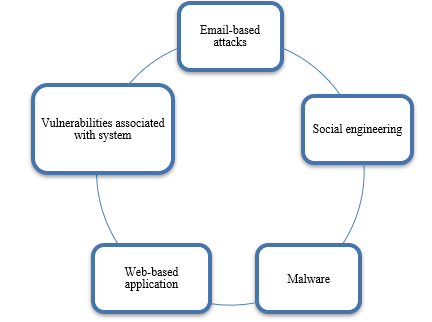

Though crime against women is on a rise in all fields being a casualty of cyber crime might be most traumatic involvement for a woman. Particularly in India where the society looks down upon the woman, and the law doesn’t indeed legitimately perceive cyber crimes. Time is presently here to acquit that our women are secure in cyber world; the memento alarms to halt clowning around activities on web get to because it is an offense and women take umbrage from it. Each moment, one woman in India gets deceived to be a casualty of and the online platform cyber violations and a cyber crime is presently the modern stage where a security, woman’s dignity and security is progressively being challenged each minute. Offense, undermining, Trolling, stalking, voyeurism, body-shaming, slandering, watchfulness, exact retribution porn and numerous other shapes of obscene representation of women are uncontrolled within the cyber world. In this paper we organize to examine upon the diverse sorts of cyber crimes that can be caused upon a woman, and they unfavourably influence her. We shall also briefly examine upon the different laws that exist to secure woman in such cases such as the Information Technology Act (2000).
Cyber Crimes Against Women
Technical measures to forfend computer systems are being implemented along with licit measures to obviate and deter malefactor deportment. But this technology kens no physical boundaries; it flows more facilely around the world subsequently the malefactors are increasingly located in places other than where their acts engender their effects and Cyberspace is no exception to it. Cyberspace is an incipient horizon controlled by machine for information and any malefactor activity where computer or network is utilized as the source, implement, or target is kenned Cybercrime. The mundane types of cybercrime may be discussed under the following heads: hacking, cyber stalking, cyber pornography, phishing, web jacking, software piracy, and cyber terrorism. Cybercrime against women in India is relatively an incipient concept. When India commenced her peregrination in the field of Information Technology, the priority was given to the aegis of electronic commerce (e-commerce) and communications under Information Technology Act, 2000 whereas cyber socializing communications has remained untouched. The Act turned out to be a moiety baked law as the operating area of the law stretched Cyber Victimization of Women and Cyber Laws in India. The present study is an endeavour to highlight the cyber malefactions against women in India.
Women aren't ready to report cybercrimes straightaway as they're not extremely aware on wherever to report such crimes or aren't serious regarding coverage an equivalent thanks to social embarrassment they don’t wish to face.Their mindset needs to broaden and they must be the whip to curb down by taking derring-do against such perpetrators that is to go ahead and lodge an immediate complaint. Most of the issues will be resolved if women report the crime right away and warn the wrongdoer concerning taking robust action.
Cybercrimes intent typically through fake ids created on Facebook, Twitter and different social media platforms inflicting grave injury to women, as through these platforms, major blackmailing, threatening, bullying, or cheating via person messages and email unit of measurement done by perpetrators. Ill-intentioned men act these cyber-crimes with malafide intention like smuggled gain, revenge, insult to the modesty of a woman, extortion, blackmailing, sexual exploitation, defamation, incite hate against the community, and prank satisfaction of acquiring and to steal data
Major Cyber Crime Areas
Some of the most important well-known cybercrimes have place thousands of girls into varied health problems like depression, cardiovascular disease and women suffer from anxiety, cardiomyopathy, diabetic and thyroid ailments because of e-harassment. Major cyber crimes area unit as under,
- Cyber stalking
- Defamation
- Morphing
- Cyber Pornography
- E-mail spoofing
- Trolling
Cyber Law under the Information and Technology Act, 2000
The stalkers and cybercriminals can be booked under several sections for breaching of privacy. Section 67 deals with publishing or transmitting obscene material in electronic form. The earlier section in ITA was later widened as per ITAA 2008 in which child pornography and retention of records by intermediaries were all included.
a) Section 66A
Sending offensive messages through communication service, inflicting annoyance etc., through associate transmission or causing associate email to mislead or deceive the recipient regarding the origin of such messages normally referred to as IP or email spoofing area unit all coated here. Punishment for these acts is imprisonment up to three years or fine.
b) Section 66B
Dishonestly receiving taken computer resource or communication device with social control up to a few years or one large integer rupees as fine or each.
c) Section 66D
Cheating by person on victimization computer resource or a communication device shall be reprimanded with imprisonment of either description for a term that extends to 3 years and shall even be at risk of fine which can touch one 100000 rupees.
d) Section 66E
Privacy violation-Publishing or transmittal non-public space of somebody while not his or her consent etc. penalisation is 3 years imprisonment or 2 hundred thousand rupees fine or each.
e) Section 66F
Cyber terrorism – intent to threaten the unity, integrity, security or sovereignty of the state and denying access to anyone licensed to get access to personal resource or trying to penetrate or access a computer resource while not authorization.
f) Section 72
Punishment for breaching one’s space and confidentiality.
g) Section 72A
Punishment for revealing data throughout lawful contract.
h) Section 441 IPC
This section deals with criminal misdemeanour.
i) Section 354D
This section deals with stalking. It defines stalker as a person who follows women and tries to contact such woman, monitors each activity undertaken by the girl whereas mistreatment digital media.
Major Cyber Crime Areas
- Don’t share passwords
- Don’t leave your webcam connected
- Don’t share more than necessary
- Don’t meet on-line acquaintances alone
- Update all operating systems on your devices
- Secure your devices with anti-virus software
- Perused the fine print
- There's no such thing as ‘freebies’
- Block individuals you don’t need to interact with
Reporting a cyber crime
The strategy for news cyber violations is extra or less a proportionate as for news the other very offense. The nearby police stations can be approached for recording complaints fair as the cyber crime cells specially assigned with the jurisdiction to enlist complaint. In addition, provisions have now been made for filing of 'E-FIR' in most of the states. Women security is a must and the police in our nation must be well prepared to resolve complaints of cyber crime made by women and cognizance of the same must be taken very seriously.
Each police station must have expert-trained police officer who can quickly bargain with cyber crime complaints made. In case a police station denies enlist the complaint, a representation may be given to the commissioner of police/superintendent of police. If in spite of that action isn't taken, the following step seem either be a private complaint before the concerned court or a summons before the high court. “If There's Cyber Crime, Women Begin Reporting Right Now”
Reasons for Cyber Attacks
Targets for cyber attackers
There are different frameworks and innovations that are being focused on by attackers, using multiple attack measures. There is steady development towards targeted attacks, which is expanding the like hood of attacks to take place.
Targets for Cyber Attackers
Measures needed to Reduce Cyber Crimes
- Drafting of National Cyber Security Policy of India as soon as possible.
- Dedicated cyber security laws in India keeping in mind contemporary cyber security threat.
- Cyber security awareness must be improved in order to involve all the stakeholders for the implementation of cyber security initiatives of GOI
- Greater emphasis on R&D of indigenous security technology.
- PPP VIA a VIS technical and operational co-operation aimed at encouraging organisation to adopt individually tailored IT regulations
- Creation of new agency such as National Critical Information Infrastructure Protection Centre to charge with protecting assets in sensitive areas
Most affected
A major consequence of online abuse is the silencing effect it has on women, sometimes forcing them to shut themselves out of online spaces. A survey by Feminism in India, a digital platform, found that 28% of women who experienced online abuse said they intentionally reduced their online presence. Amnesty International conducted a study on online violence against women in 2017 which showed that more than 75% of women surveyed across eight countries (Denmark, Italy, New Zealand, Poland, Spain, Sweden, the UK and USA) who had experienced abuse or harassment made changes to the way they used social media platforms. A third of women said they even stopped posting their opinion on certain issues altogethe
Women often find it difficult to report online abuse to the police for several reasons, ranging from not knowing the law to not trusting the criminal justice system. Of the women surveyed by Feminism in India who reported harassment to the authorities, only one in ten said they had received a helpful response. The National Crime Records Bureau says that around 12,000 incidents of cyber-crimes were reported in 2016, and nearly the same number that were reported the previous year were still pending investigation.
Social media platforms, which are uniquely positioned to take quick and effective action against abusers, are also known to fail to act. Amnesty’s survey indicated that women feel social media companies need to do more. Just 18% of women polled across all countries said that the responses of social media companies were very, fairly or completely adequate. In India, there have been a number of reports in the media about women who reported online abuse to social media platforms, but received highly unsatisfactory responses
Top Five Attacks Faced
Cybercrime Tools
Analysis Tools
These tools are utilized to measure hazard. They measure what an incident did and how it was done and what the results were. Cases of investigation tools include the Coroners Toolkit that runs beneath NIX and Encase that runs beneath windows.
These include a specialized awareness through information of specialized suggestions of activities, an understanding of how data can be modified, cleverness, open-mindedness, deviousness, a tall standard of morals, proceeding instruction and the utilize of excess information sources. In case one doesn’t altogether get it or meet the over necessities, the framework can be left distant more regrettable than when at first compromised from a legal angle. It is like a activity cop investigating a murder scene. I would deliver a case of one of the told” EcCase”. It gives a recognizable Windows Explorer fashion view. The view shows records without changing them in any way, counting free space that contains erased records. The see sheet is additionally exceptionally supportive when sorting through many records. It contains a solid Report see which offer assistance agents construct a case as they continue. It too permits point and tap record hashing; a priceless apparatus to verify records afterward.
The reason of the ultimate organ of the cyber crimes division is to police the web to guarantee that certain cyber crimes can be stopped some time recently their commission. For this reason, the Network Monitoring Centre has been provided with a Network Monitoring Tool, created by I.I.T. Kanpur. It is additionally utilized to permit comparative devices to attain such a purpose.
Machine Learning & Deep Learning based Tools
A) SIEM tool
Machine Learning & Deep Learning based SIEM tool for numerous professionals, SOC still implies SIEM tool and security observing and to a few degrees that's redress as the SIEM tool acts as a core engine of the SOC, which collects the logs from the integrated log sources, forms those logs as per the predefined rule and give the alerts
Since the beginning of the SIEM tool security engineers/analysts are putting in parts of distinctive rules to screen and relate the log information pumped into the SIEM instrument. These rules are included one by one as per the environment necessities
Since of the amount of log data that must be prepared by the SIEM apparatus, it is impossible to generate the rule that can distinguish the anomalies. The next generation SIEM tools will be utilizing machine learning which is basically marrying the rules or algorithms with the measurements that can be utilized for making knowledge-based, intelligent investigation that will deliver prescient noteworthy results
B) Wearing the Hackers Hat — AI primarily based Sandbox
Hackers are constantly ahead of security defence bunches, utilize the innovation to perform investigation of focused on client’s environment to spot the vulnerabilities to anticipate exploitability. This same technique security analyst will use by utilizing AI and ML-based sandboxing tool, which will be a proactive approach and a defensive one too. this could offer knowledge-based inputs to the analyst to counter the probable security attacks and shield the system from potential security risks.
A Security Operations Centre (SOC) is characterised each as a group, typically operating in shifts round the clock, and a facility dedicated to and arranged to stop, detect, judge and respond to cyber security threats and incidents, and to fulfil and survey administrative compliance.
All these progressions within the innovation zone don't dispose of the require for making the natural educated decisions by the human brain. We still need to have security investigator to see into the occurrences and finalize the activity plan. The life of these analysts will be made simple by liberating them from the tedious unremarkable tasks and they can utilize their time and intelligence in characterizing and executing the occurrence reaction arrange to decrease the impact.
C) AI and machine learning can boost cyber defences
As artificial intelligence and machine learning gathers pace, and begins to affect increasingly businesses, it’s beyond any doubt to play a greater part in cyber security. Since the fight with cyber criminals moves so rapidly, machine learning models that can anticipate and accurately identify attacks quickly may well be a genuine boon for InfoSec experts. These models got to be prepared and sharpened. In any case, there's moreover a risk that AI and machine learning may be misused by attackers
According to a survey every month 7000 cyber crimes are happened, but in national crime record bureau less than 1000 crimes have been reported. So, there is huge mismatch between actual crime happen and crimes reported. Cybercrime reporting in India is still in its nascent stage though cyber violence is fast growing. Our laws need to be changed to make them cyber-sensitive as well as gender-sensitive. Words like lascivious and prurient should be dropped from the concerned Act to make them better secure women’s equality and dignity. The perspective of the laws should be to ensure dignity of women and not being in a paternalistic role. Cybercrimes against women needs a holistic approach with change in laws, change in approach of officials and more intense sensitization campaigns involving different sections of society. Indian women netizens are still not open to quickly report the cyber mishandle or cyber-crime. This nature gives the guilty parties the chance to elude after the commission of cyber-crime. The issue would be unravelled only when the victimized woman at that point and there report back or indeed caution the abuser around taking strong activities.
Progress is impossible without change, and those who cannot change their minds cannot change anything.